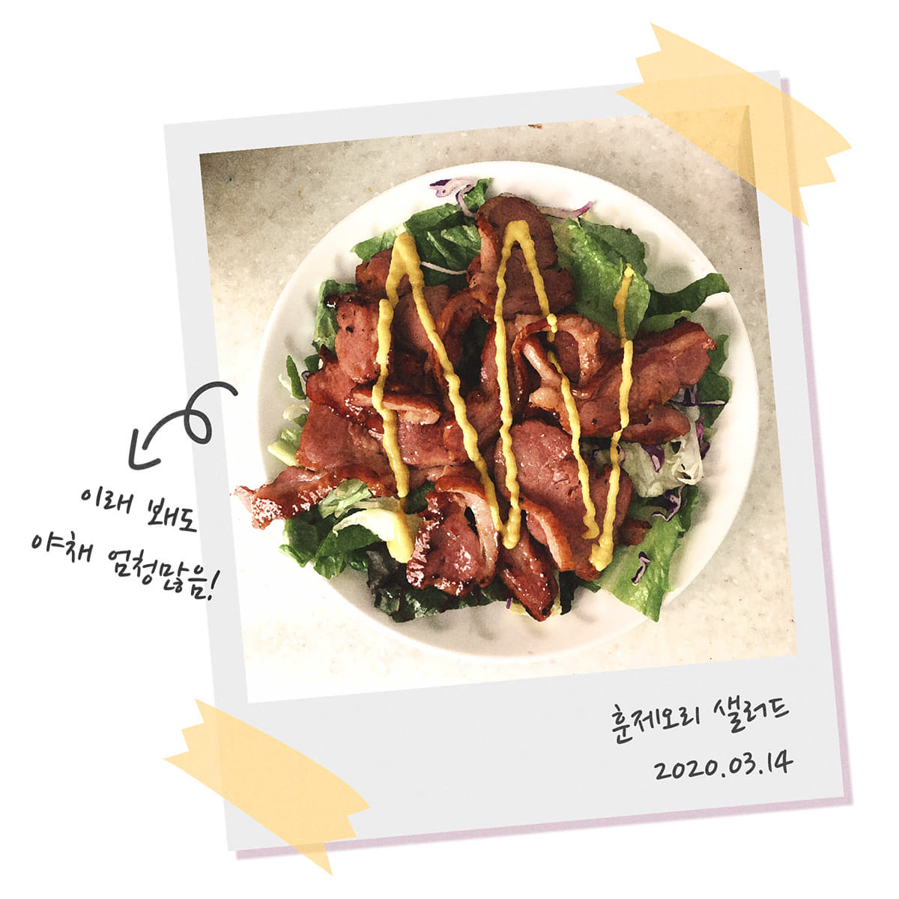
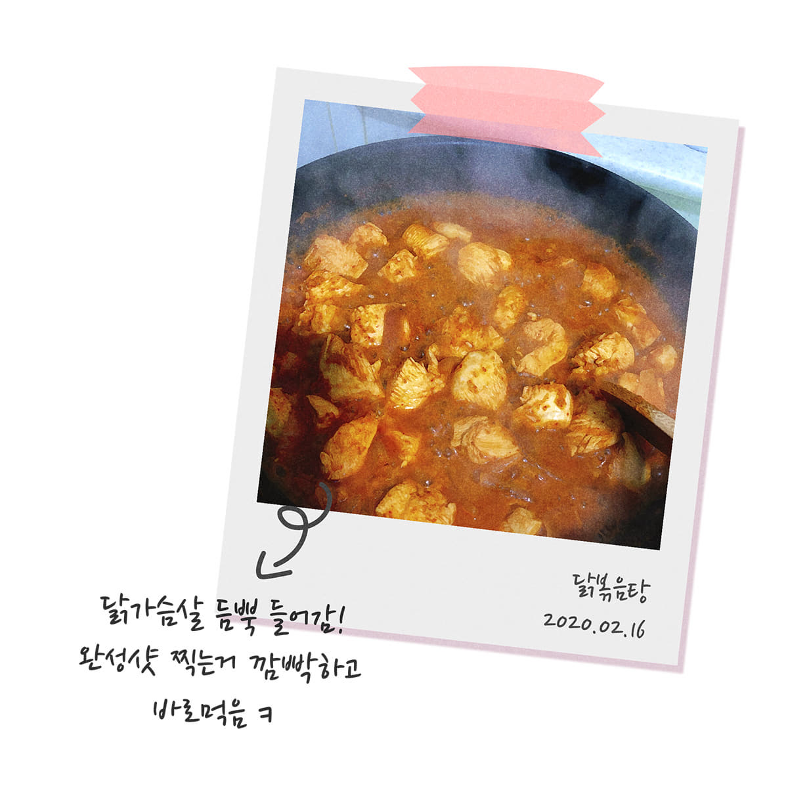
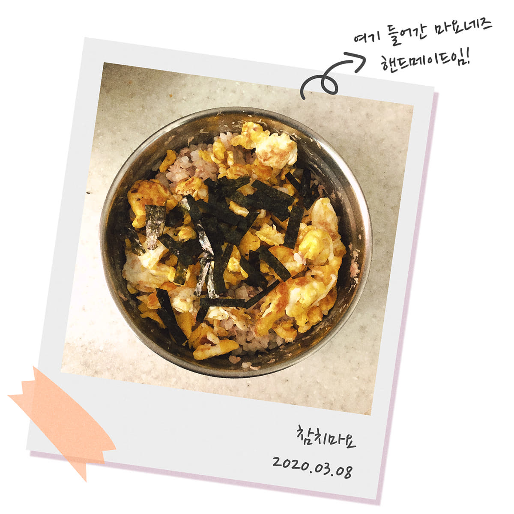
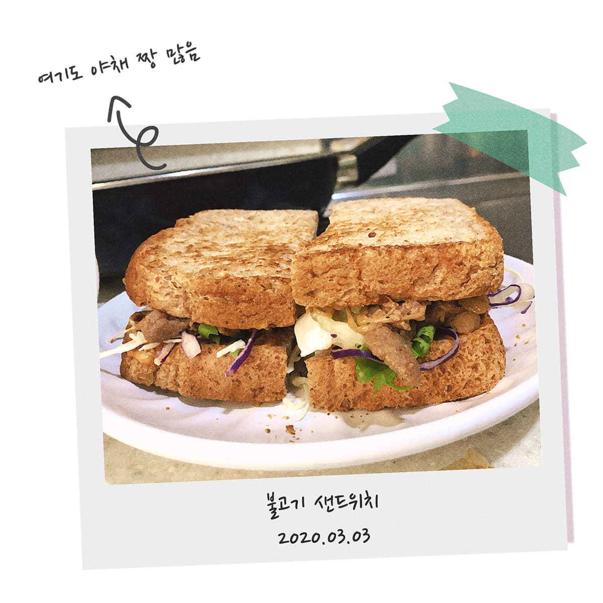
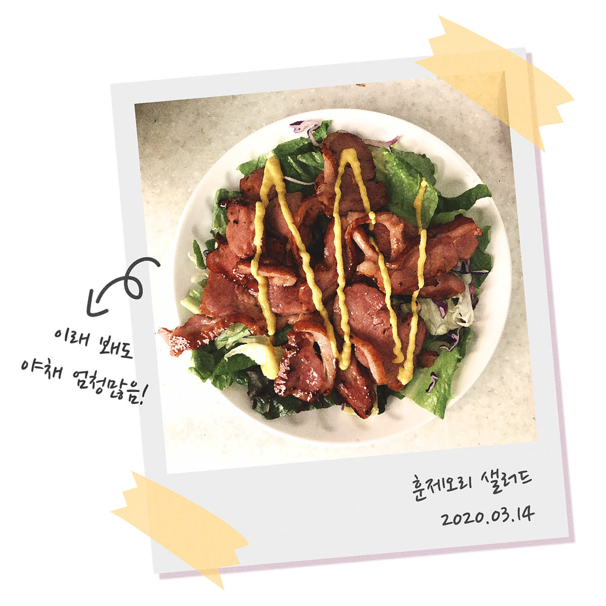
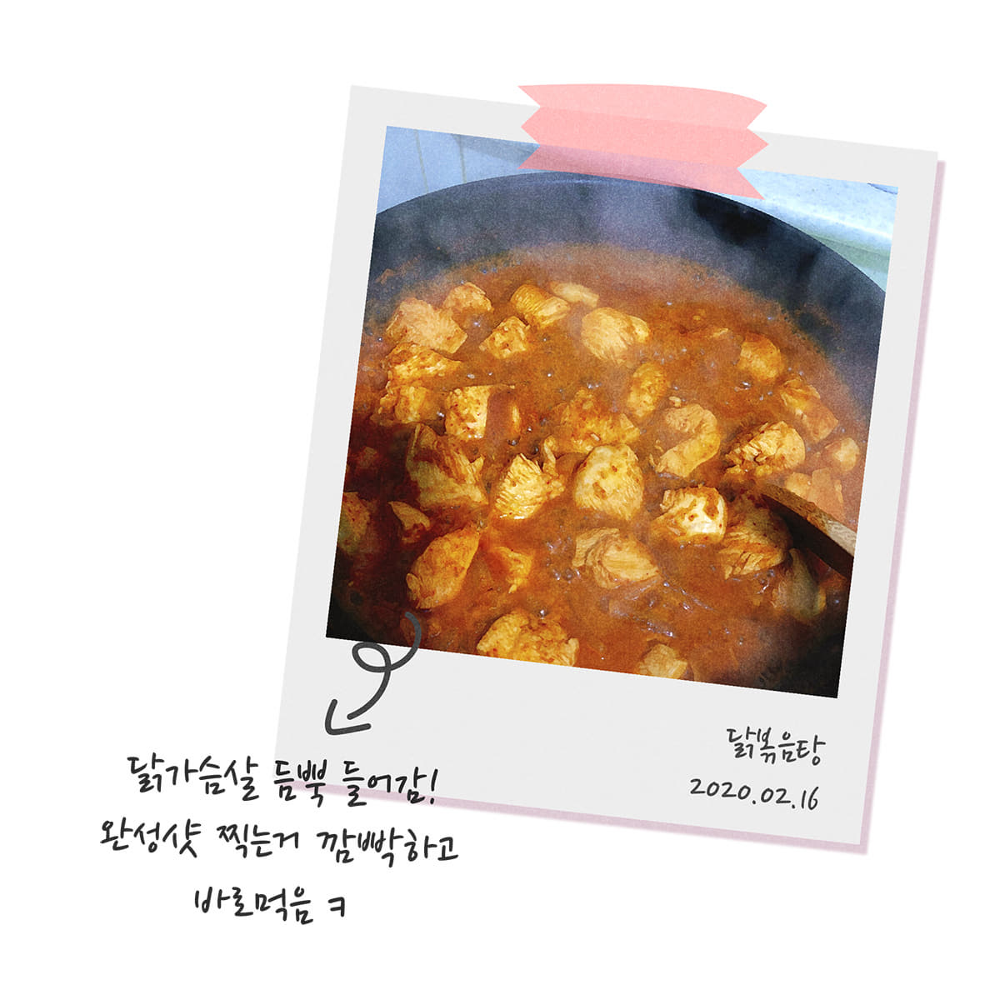
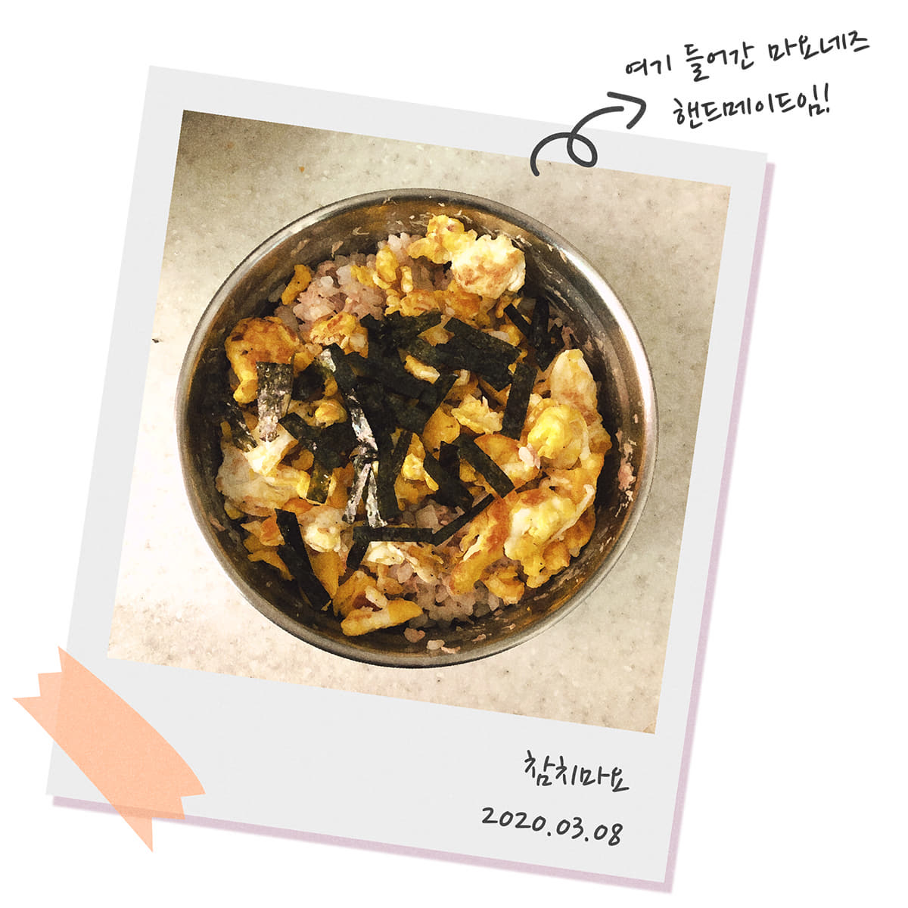
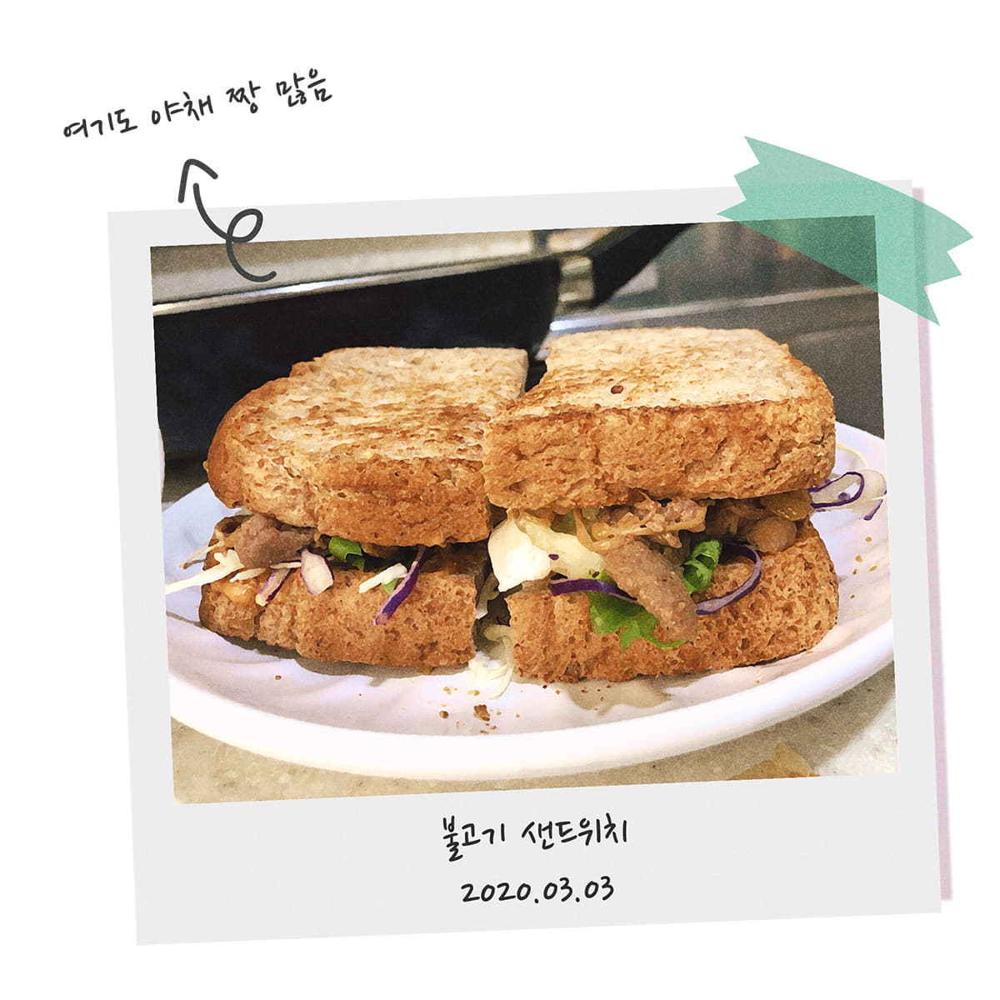

다이어트하면서 먹은 음식들





디저트를 마음껏 못 먹는 게 조금 괴로울 뿐이지, 저탄수화물 식단만 지키면 되니까 평소에 먹는 것들은 다이어트 음식이라는 생각은 별로 들지 않았다. 그리고 2주 중 하루는 먹고 싶은 음식을 먹는 날로 만들어서 그동안 음식 때문에 받는 스트레스는 거의 없었다.
나의 생활패턴이 망가지기 시작한건 입시를 시작했을때 부터다. 학업으로 인한 수면 부족과 인스턴트 위주의 식사 때문에 고등학교 입학 이후부터 약 20kg정도 찌고, 작년부터는 불면증까지 생겼다.
의지가 필요 없는 다이어트라는 건, 무조건 맛있는 음식을 참아야 하고 땀 흘려 운동하는 것이 다이어트라고 생각한 편견을 깨부숴주는 말이었다. 다이어트를 시도해도 일주일을 넘겨본 적이 없을 정도로 나는 먹는 것을 좋아하고 움직이지 않았다. 이런 나에게 다이어트가 습관이 되어 지속 가능하게 되면 그래도 지금까지 했었던 수많은 다이어트보다 긍정적인 결과가 나오지 않을까?라는 생각이 들어 작은 습관부터 성형해보기로 했다.
살을 찌게 만드는 가장 근본적인 원인은 고기도 아닌 바로 단 것(당질) 때문이다!
살이 찌는 원리를 간단히 정리해보면 우리 몸은 탄수화물을 섭취했을 때 그것을 포도당으로 변화시키는데, 포도당은 주 에너지원이 되어 신체에서 쓰인다. 포도당을 모두 에너지원으로 사용하면 문제가 되지 않지만, 탄수화물을 과다 섭취하여 포도당이 남게 되면 이것이 지방으로 변환되어 우리 몸에 남게 된다. 그리고 이 지방들이 곧 살이된다.




디저트를 마음껏 못 먹는 게 조금 괴로울 뿐이지, 저탄수화물 식단만 지키면 되니까 평소에 먹는 것들은 다이어트 음식이라는 생각은 별로 들지 않았다. 그리고 2주 중 하루는 먹고 싶은 음식을 먹는 날로 만들어서 그동안 음식 때문에 받는 스트레스는 거의 없었다.
다이어트를 시작하고 그날그날 무엇을 먹었는지, 뭘 했는지 매일 일기를 쓴다.아무 말 대잔치인 일기장이 되어가고 있지만, 다이어트는 혼자만의 싸움이니까 잘하고 있다고 격려해 주는 것도 나밖에 없어서 되도록이면 좋은 말만 쓰고 있다.
습관성형을 시작한 지 3개월 정도지만 결과는 놀라웠다.
예전보다 훨씬 몸이 가벼워진 것을 느끼며 하루를 시작하고, 내일은 더 건강해질 것이라는 생각을 하며 잠든다. 가장 크게 느낀 건 나도 마음 먹으면 할 수 있다는 사람이라는 걸 알게 된 것이다.